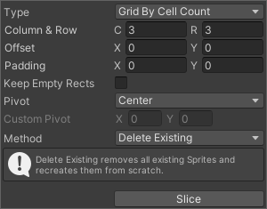
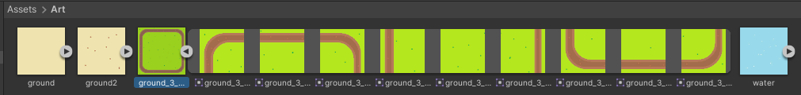
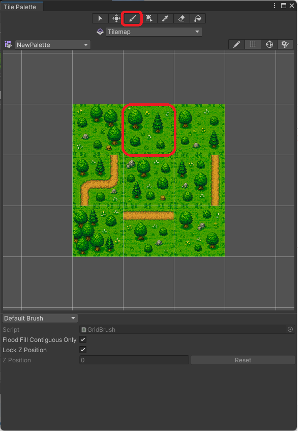
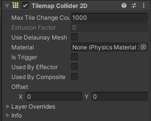

2D-roolipeli
Yleistä
Tässä työssä kokeillaan Tilemap-työkalua kentän rakentamisessa. Lisäksi tehdään yksinkertainen animaatio hahmolle.
Uusi projekti ja kuvat
- Aloita 2D-projekti, nimeä järkevästi
- Lisää kansio Assets / Art, tuo tänne neljä kuvaa (ground, ground2, water ja ground 3 x 3)
{kind=link}
{kind=link}
{kind=link}
{kind=link}
Kolme kuvista ovat kooltaan 100px x 100 px, kolmas kuva on kooltaan 300px x 300px.
Tehdään isosta ruohikosta yhdeksän kuvaa jotka jokainen kooltaan 100px x 100px. Kuvan pilkkominen tapahtuu näin:
- Valitse kuva
- Texture Type Sprite (2D and UI)
- Sprite Mode: Multiple
- Pixels Per Unit 100 (koska kuva 100x100)
- Filter Mode: Point (no filter) ja paina Apply
- Paina nappia Sprite Editor
- tee kuvasta 3 x 3 kokoinen

- paina Slice ja lopuksi Apply
- tee kuvasta 3 x 3 kokoinen
Lopputuloksena Art-kansiossasi on yksi kuva jaettuna yhdeksään osaan:

Pelialueen rakentaminen
Tilemap
Tilemap ja Tilepalette ovat tapa rakentaa pelialue kuvista "maalaamaalla".
- Hierarchy: hiiren oikea / 2D Object / Tilemap / Rectangular
Ilmestyy ruudukko pelialueelle. Palaamme hetken kuluttua maalaamaan tänne pelialueen.
Tile Palette
Avataan Tile Palette-työkalu: Window / 2D / Tile Palette
- Valitse Create New Palette, anna nimeksi esim. RPGPalette ja tallenna se kansioon Tilemap
Tämän jälkeen raahaa kuvat Art-kansiosta osaksi palettiasi, tallenna jokainen Tile kansioon Tilemap (tarkenne .asset).

Nyt voit palata takaisin Hierarchy-ikkunan Tilemapille. Pidä TilePalette auki ja varmista että sinulla on valittuna jokin paletin kuvista sekä maalipensseli. Kokeile maalata pelialue Scene-näkymässä.
Lisätään Tilemap-objektille komponentiksi Tilemap Collider 2D
- valitse Assets / Tilemap-kansiosta ne tiilet joissa pelaaja ei törmää
- aseta niissä Collider Type - None. Käytännössä ainoastaan vesi olisi sellainen johon pelaaja törmää.

- Testaa toiminta.